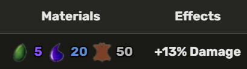

To obtain the True Triple Katana, the player needs to get 300 Mastery on Saishi, Shizu, and Oroshi. Then, they have to buy it from the Mysterious Man for $ 2,000,000.
TTK Z Move
TTK X Move
1. Talk to Manager in Cafe after 10 minutes of joining a server.
2. Manager will tell you how long until the Legendary Sword Dealer spawns.
3. Then when he says the Legendary Sword Dealer is here.
4. You have to search the seven locations:
5. When you do find the Legendary Sword Dealer, you can purchase one of the swords
required to obtain the True Triple Katana for 2 million beli.
6. Repeat the above process until all the 3 swords are obtained, then you
have to get 300 mastery on each sword.
7. Then go to the highest point on Green Zone and talk to the Mysterious Man who will
allow you to purchase the True Triple Katana.
The player needs to talk to the blacksmith to upgrade this sword: 